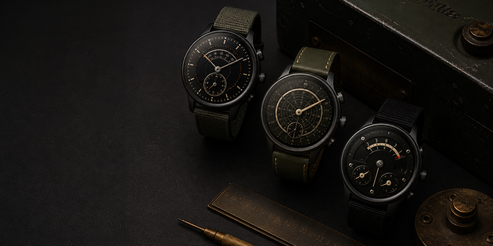

Vintage, reconsidered
References to laboratory instruments, aviation panels and archival typography, translated for a contemporary wrist.

Independent Wear OS studio · Italy
Small-batch watch faces shaped by vintage instruments, mechanical detail and a taste for the unexpected.
Enter the collectionConcept imagery · Original faces coming to Google Play
Demand Group / The studio
Demand Group is a small independent studio devoted to distinctive Wear OS watch faces. We approach every dial as a compact designed object — precise enough for daily use, peculiar enough to remain memorable.
References to laboratory instruments, aviation panels and archival typography, translated for a contemporary wrist.
A selective catalogue developed with care. No endless library, no disposable variations — only faces with a reason to exist.
Character never comes at the expense of legibility, battery-aware design or the information you need at a glance.
First collection
Layered scales, restrained brass and observatory precision.
A dark instrument panel distilled into a highly legible dial.
An unconventional display for collectors of curious objects.
Collection names and concept imagery are provisional. Final product previews and Google Play links will be published at launch.
Designed for compatible Wear OS smartwatches using Google’s current watch-face standards, with clear information, considered always-on states and efficient everyday performance.
Wear OS and Google Play are trademarks of Google LLC. Demand Group is an independent studio and is not affiliated with Google.
Business & support
Demand Group is preparing its first independent releases for Google Play. Official product links and support details will be added here before launch.
demandgroup@tuta.io ↗This presentation website does not use accounts, advertising cookies, analytics or contact forms, and does not intentionally collect personal information.
For the privacy policy covering Demand Group applications and Wear OS watch faces, visit the permanent policy page below.